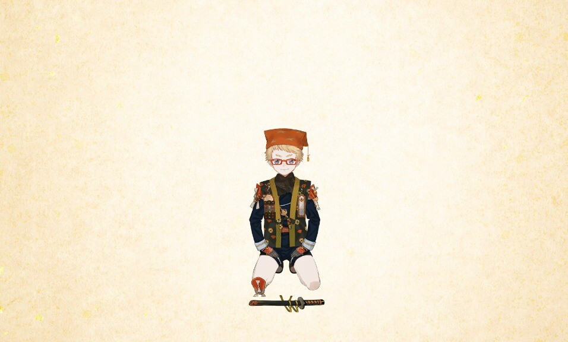
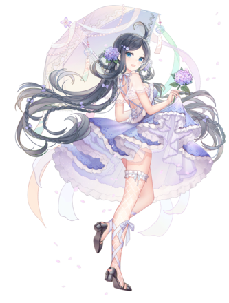
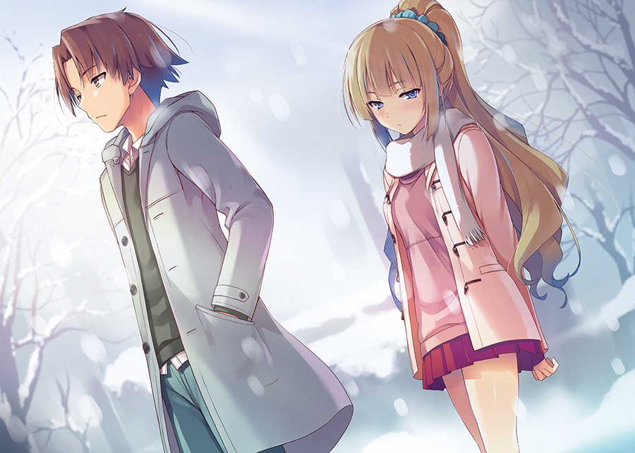
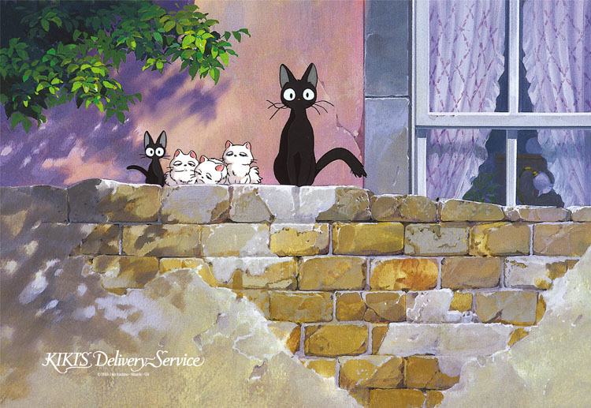

プロフィール
名前
山田恵
職業
学生
趣味
ライトノベル("よう実"こと、"ようこそ実力至上主義の教室へ")、ゲーム(放置少女、刀剣乱舞、MHRise)、アニメ・映画鑑賞をすること
好きな言葉
「力を持っていながらそれを使わないのは、愚か者のすることだ」(By綾小路父の言葉) 「不良品はほんの少しの変化を与えるだけで良品に変わる」(By堀北鈴音の言葉)
私の好きな刀剣男士
博多君は特に機動力が高く、お金に目がないかわいい子です。
私の好きな放置キャラ
この蔡文姫は放置少女というゲームに登場しています。衣装が特に可愛くて最押しです。
私の好きなシーン
このシーンは綾小路清隆と軽井沢恵が一緒に下校しているシーンで、この時二人はまだ付き合っていません(主に密会で合ってる二人・・・)
私の好きなPV
よう実のアニメ2期が発表された時のトレーラーで、2017年から2022年まで5年間ほど発表がなく、ファンは待ち焦がれていました。 よう実1年生編4巻から11.5巻までの挿絵を映像化したものです。特に、屋上の件は一番白熱していて、見どころのある場面です。 また、3期も決定しており、3期は2年生編が映像化される予定です。
私の好きな場所
好きな場所として三鷹の森ジブリ美術館を挙げさせていただきました。私自身ジブリ映画はよく見るほうなので、一度は行ってみたいなと思いました。
▲ページトップ